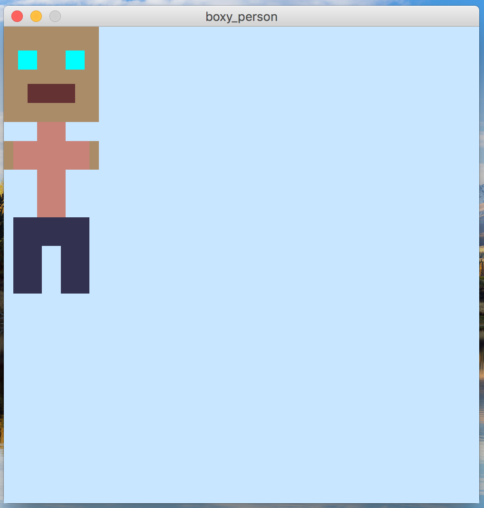
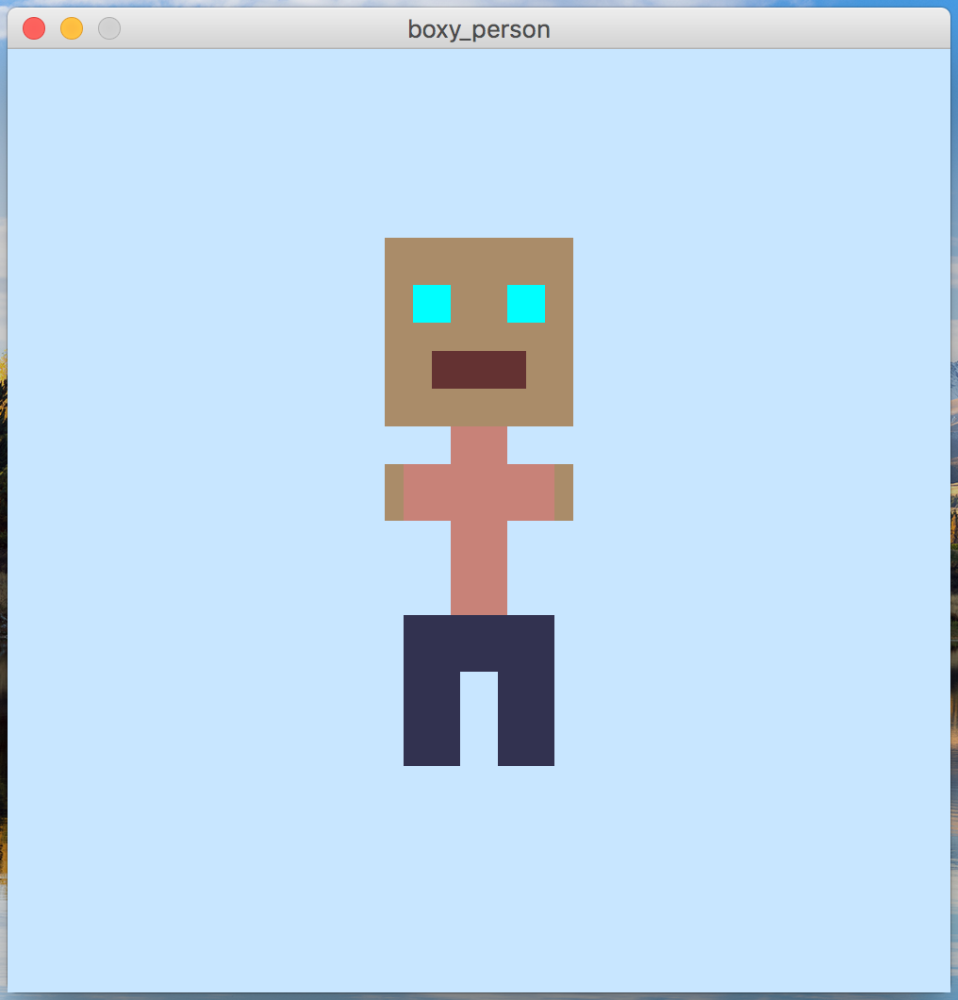
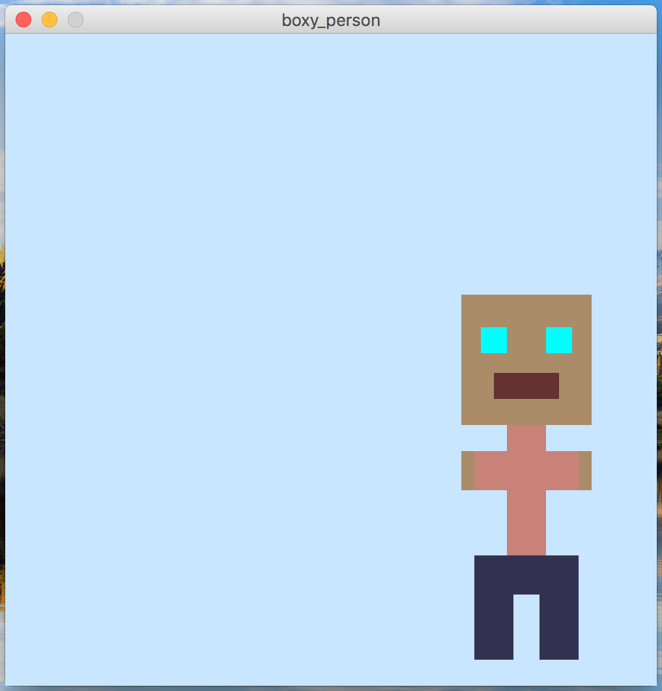

In this assignment, you will write a processing program that produces a picture of a “boxy” person.
You should use rectangles and/or custom shapes (using beginShape(), vertex(), and endShape()) to draw the person.
The person you draw should closely resemble the below image:
Overall, the person (not the whole canvas) should be between 80-100 pixels wide and between 200-300 pixels tall. You must make the person look very close to this person. One exception: you may choose any colors that you like, as long as the eyes, mouth, skin, torso, and legs are all different colors.
However, you won’t just be drawing a person like you are used to.
Instead, you are going to use two variables to determine where on the screen the person is positioned.
At the very top of the program, you should declare two variables, named personWidth and personHeight.
personWidth will determine the x coordinate of the person, and personHeight will determine the height.
If you make a change to the value of these two variables and then re-run your program, the person should “move” to a different location.
Set the entire image canvas to be 500 by 500 pixels, and make the background a very light blue.
If both of the variables are given the value 0, then the person should appear in the top-right corner, like so:

However, if personWidth is set to be 200 and personHeight is set to be 100, the canvas will show the person shifted to the right 200 pixels, and down 100:

Another example: if personWidth is set to be 350 and personHeight is set to be 200, the canvas will show the person shifted to the right 200 pixels, and down 100:

Notice how the person changes position when the variable values are changed!
(Note: you need to change the variables, and then re-run the processing program to see the change).
Do do this in your program, you should use the personWidth and personHeight variables to help draw the x and y coordinates of the processing image.
You should name your program boxy_person.pde.
You should only use processing features that we have discussed up to this point, or otherwise allowed by the instructor.
You must use the setup and draw functions, like we discussed in class.
Your program file should have a “header” comment at the top that has the following format:
//
// Author: Student Name
// Description:
// A short description of what this program does!
//
Even though this is a small program, it is important to get in the habit of commenting on your code. This is considered good programming style, and it even more helpful once you start writing larger programs.
This was assigned on 9/8/2017. It is due on Friday, 9/15/2017 at 5:00pm.
Turn in each of the files described in the spec (1 total) the assignment 3 drop-box in D2L before the due date. Make sure to name the files exactly as this document specifies. In general, make sure to follow these instructions precisely. If you don’t, we will deduct points!!!